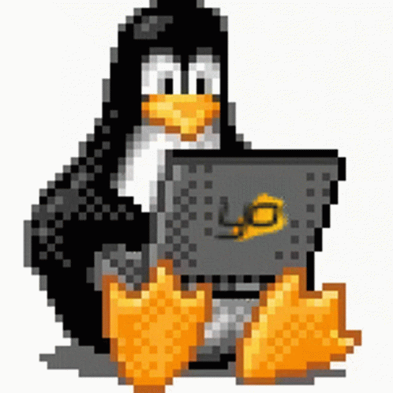

Welcome to my website!
This page is dedicated to free software I use on a daily basis as well
as a compilation of useful links to restore the old internet & computing.
Below are some of my software of choice.
- Operating system: Gentoo Linux
- Window Manager: Dwm
- Music Player: Moc
- File Manager: Ranger
- Terminal: ST (Simple Terminal)

Here is a link to my own github.
Some useful links below.